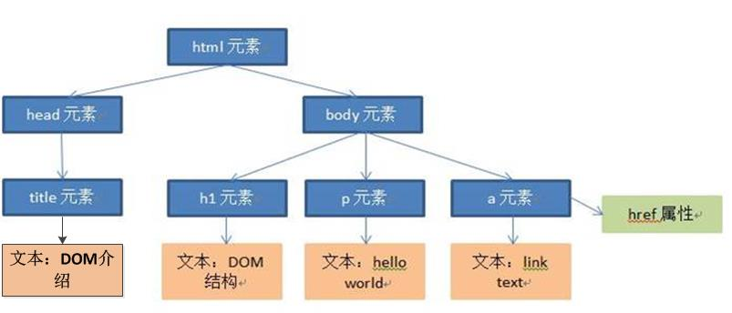
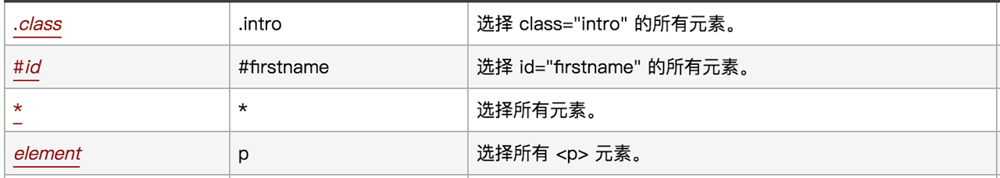
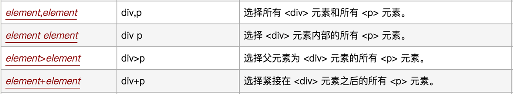
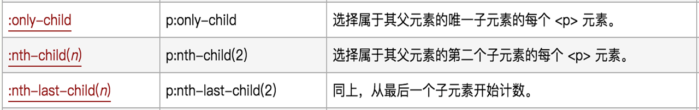
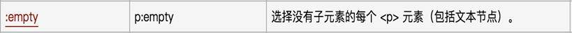

XPath、CSS定位
目标
1. 熟悉Xpath定位策略
2. 熟悉CSS定位策略
为什么要学习XPath、CSS定位？
1. 在实际项目中标签没有id、name、class属性
2. id、name、class属性值为动态获取，随着刷新或加载而变化
1. 什么是Xpath？
1. XPath即为XML Path 的简称，它是一种用来确定XML/HTML文档中某部分位置的语言。
2. HTML可以看做是XML的一种实现，所以Selenium用户可以使用这种强大的语言在Web应用中定位元素。
Xpath用途：
基于HTML文档结构使用XPath进行元素定位
提示：Xpath为强大的语言，那是因为它有非常灵活定位策略；
思考
Xpath有那些策略呢？
2. HTML文档结构
1. HTML DOM
HTML DOM（HTML document object model）：HTML文档对象模型，定义了访问和操作HTML文件的标准。
DOM 定义了访问 HTML 和 XML 文档的标准：
“W3C 文档对象模型 （DOM） 是中立于平台和语言的接口，它允许程序和脚本动态地访问和更新文档的内容、结构和样式。”
2. HTML DOM特点
HTML DOM 是：
HTML 的标准对象模型
HTML 的标准编程接口
HTML DOM 定义了所有 HTML 元素的对象和属性，以及访问它们的方法。换言之，HTML DOM 是关于如何获取、修改、添加或删除 HTML 元素的标准。
在 HTML DOM 中，所有事物都是节点。DOM 是被视为节点树的 HTML。
根据 W3C 的 HTML DOM 标准，HTML 文档中的所有内容都是节点：
1). 整个文档是一个文档节点
2). 每个 HTML元素是元素节点
3). HTML元素内的文本是文本节点
4). 每个 HTML 属性是属性节点
5). 注释是注释节点
DOM的说明：
1. 将HTML中所有内容均看待成节点
2. 将所有节点按照层次结构组织成一棵树
从DOM树的根节点开始描绘出一条通往指定节点的路径，该路径信息称作为指定节点的Xpath路径。
HTML DOM范例
<html>
<head>
<title>DOM 介绍</title>
</head>
<body>
<h1>DOM 结构</h1>
<p>Hello world!</p>
<a href=“#”>link text</a>
</body>
</html>
范例文档对应的DOM结构：

3. Xpath定位策略(方式)
1. 路径-定位
1). 绝对路径
2). 相对路径
2. 利用元素属性-定位
3. 层级与属性结合-定位
4. 属性与逻辑结合-定位
Xpath定位 方法
driver.find_element_by_xpath()
3.1 路径(绝对路径、相对路径)
绝对路径：从最外层元素到指定元素之间所有经过元素层级路径 ；如:/html/body/div/p[2]
提示：
1). 绝对路径以/开始
2). 使用Firebug可以快速生成，元素XPath绝对路径
相对路径：从第一个符合条件元素开始(一般配合属性来区分)；如：//input[@id='kw']
提示：
1). 相对路径以//开始
2). 使用Friebug扩展插件FirePaht可快速生成，元素相对路径
使用Xpath实现 案例-1
需求：
1). 使用绝对路径和相对路径分别实现，账号A：admin;密码A：123456；自动化脚本设计
3.2 利用元素属性
说明：快速定位元素，利用元素唯一属性；
示例：//*[@id='userA']
3.3 层级与属性结合
说明：要找的元素没有属性，但是它的父级有；
示例：//*[@id='p1']/input
3.4 属性与逻辑结合
说明：解决元素之间个相同属性重名问题
示例：//*[@id='telA' and @class='telA']
3.5 Xpath-延伸
//*[text()="xxx"] 文本内容是xxx的元素
//*[starts-with(@attribute,'xxx')] 属性以xxx开头的元素
//*[contains(@attribute,'Sxxx')] 属性中含有xxx的元素
练习
用尽可能多的方法编写xpath路径定位css_example.html文件元素：
1. div1标签
2. div1中p1的a标签
3. 最后一个a标签
3.6 Xpath-总结
1. 如何通过Friebug快速生成绝对路径
2. 如果通过Friebug快速生成相对路径
3. Xpath策略有那些
3. CSS定位
3.1 什么是CSS？
CSS 中选择器是一种模式，用于选择需要添加样式的元素。计算机能够通过CSS选择器定位到相应元素，我们在编写自动化测试脚本时是在不断地找到CSS选择器对应的元素。
CSS中通过各种选择器选择不同的页面元素，完成了颜色、字体、宽高等的设定，既然可以通过CSS选择器完成元素选择及样式设定，则也可利用CSS选择器的规则完成自动化测试脚本中的元素定位。
1. CSS（Cascading Style Sheets）是一种语言，它用来描述HTML和XML的元素显示样式；
(css语言书写两个格式：
1. 写在HTML语言中<style type="text/css">...
2. 写在单独文件中 后缀.css
)
2. 而在CSS语言中有CSS选择器(不同的策略选择元素)，在Selenium中也可以使用这种选择器；
提示：
1. 在selenium中极力推荐CSS定位，因为它比XPath定位速度要快
2. css选择器语法非常强大，在这里我们只学习在测试中常用的几个
CSS定位 方法
driver.find_element_by_css_selector()
3.2 CSS定位常用策略 (方式)
1. id选择器
2. class选择器
3. 元素选择器
4. 属性选择器
5. 层级选择器
使用CSS实现 案例-2
需求：
1). 使用CSSid定位实现，账号A：admin;密码A：123456；自动化脚本设计
通过伪类名、id、标签名定位

class选择器
说明：根据元素class属性来选择
格式：.class 如：.telA <选择class属性值为telA的所有元素>
元素选择器
说明：根据元素的标签名选择
格式：element 如：input <选择所有input元素>
属性选择器
说明：根据元素的属性名和值来选择
格式：[attribute=value] 如：[type="password"] <选择所有type属性值为password的值>
层级选择器
说明：根据元素的父子关系来选择
格式：element>element 如：p>input <返回所有p元素下所有的input元素>
提示：> 可以用空格代替 如：p input 或者 p [type='password']
通过元素之前嵌套关系

通过属性


通过父子关系

元素状态

3.3 练习
1. 在百度首页通过css的标签定位方式定位input标签，并且证明首个input标签是name属性值为ie的标签。
2. 使用css定位方式依次访问sample_test.html中的元素
1. div1使用id定位方式
2. div1中p1的a标签采用层级定位方式（多层级定位）
3. 最后一个a标签应该采用何种定位方式？（无特定属性）
3.4 CSS总结
| 选择器 | 例子 | 描述 |
|---|---|---|
| #id | #userA | id选择器，选择id="userA"的所有元素 |
| .class | .telA | class选择器，选择class="telA"的所有元素 |
| element | input | 选择所有input元素 |
| [attribute=value] | [type="password"] | 选择type="password"的所有元素 |
| element>element | p>input | 选择所有父元素为p元素的input元素 |
4. XPath与CSS类似功能对比
| 定位方式 | XPath | CSS |
|---|---|---|
| 元素名 | //input | input |
| id | //input[@id='userA'] | #userA |
| class | //*[@class='telA'] | .telA |
| 属性 | 1. //※[text()="xxx"] 2. //※[starts-with(@attribute,'xxx')] 3. //※[contains(@attribute,'xxx')] |
1. input[type^='p'] 2. input[type$='d'] 3. input[type*='w'] |
说明：由于显示排版原因以上所有(※)号代替(*)
5. 八种元素定位总结：
1. id
2. name
3. class_name
4. tag_name
5. link_text
6. partial_link_text
7. Xpath
8. Css
说明：
1). 元素定位我们就学到这里了
2). WebDriver除了提供以上定位API方法(driver.find_element_by_xxx())
外，还提供了另外一套写法；
3). 调用find_element()方法，通过By来声明定位的方法，并且传入对应的方法和参数（了解-熟悉即可）
6. 定位(另一种写法)-延伸【了解】
说明：第二种方法使用By类的封装的方法,所以需要导入By类包
6.1 导入By类
导包：from selenium.webdriver.common.by import By
6.2 By类的方法
方法：find_element(By.ID,"userA")
备注：需要两个参数，第一个参数为定位的类型由By提供，第二个参数为定位的具体方式
示例：
1. driver.find_element(By.CSS_SELECTOR,'#kw').send_keys("python")
2. driver.find_element(By.XPATH,'//*[@id="kw"]').send_keys('python')
3. driver.find_element(By.ID,"kw").send_keys("python")
4. driver.find_element(By.NAME,"用户名标签name属性值").send_keys("123456")
5. driver.find_element(By.CLASS_NAME,"用户名标签class属性值").send_keys("18611111111")
6. driver.find_element(By.TAG_NAME,'input').send_keys("python")
7. driver.find_element(By.LINK_TEXT,'hao123').click()
8. driver.find_element(By.PARTIAL_LINK_TEXT,'hao').click()
6.3 find_element_by_xxx()和find_element() 区别
说明：通过查看find_element_by_id底层实现方法，发现底层也是调用的By类方法进行的封装；
def find_element_by_id(self, id_):
"""Finds an element by id.
:Args:
- id\_ - The id of the element to be found.
:Usage:
driver.find_element_by_id('foo')
"""
return self.find_element(by=By.ID, value=id_)
总结：虽然方法一样，但WebDriver推荐 find_element_by_xxx()这种方法
练习
1. 在百度首页定位一组input标签并且找出”type”属性不是”hidden”的标签。
2. 操作斗鱼页面
验证经过点击“下一页”确实由第一页切换到了第二页(用xpath规则完成)
3. 将八种元素定位方式封装为一个功能函数，定义为一个模块
以课程演示的范例作为应用访问该模块，完成元素定位及操作
也可以将八个小的范例也定义为函数分别完成调用
4. 获取58“个人房源”元素列表并显示房屋链接文本。
5. 附加：
跟踪find_element_by_xxx()方法：
1). 该方法使用了哪一个下级方法
2). class、tag_name、id定位方式在find_element_by_xxx()的下级方法中是使用了哪种定位方式？
总结：虽然方法一样，但WebDriver推荐 find_element_by_xxx()这种方法